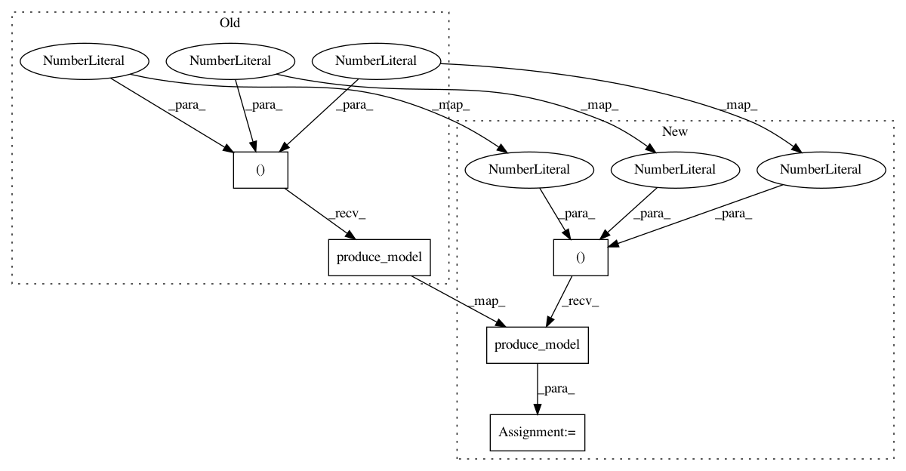

21994919156aac15558f77555538346fb702bcbc,tests/nn/test_graph.py,,test_long_transform,#,202
Before Change
def test_long_transform():
graph = CnnGenerator(10, (32, 32, 3)).generate()
history = [("to_wider_model", 1, 256), ("to_conv_deeper_model", 1, 3),
("to_concat_skip_model", 5, 9)]
for args in history:
getattr(graph, args[0])(*list(args[1:]))
graph.produce_model()
assert legal_graph(graph)
def test_node_consistency():
After Change
def test_long_transform():
graph = ResNetGenerator(10, (28, 28, 1)).generate()
graph.to_deeper_model(16, StubReLU())
graph.to_deeper_model(16, StubReLU())
graph.to_add_skip_model(13, 47)
model = graph.produce_model()
model(torch.Tensor(np.random.random((10, 1, 28, 28))))
In pattern: SUPERPATTERN
Frequency: 4
Non-data size: 5
Instances
Project Name: keras-team/autokeras
Commit Name: 21994919156aac15558f77555538346fb702bcbc
Time: 2018-11-26
Author: jhfjhfj1@gmail.com
File Name: tests/nn/test_graph.py
Class Name:
Method Name: test_long_transform
Project Name: keras-team/autokeras
Commit Name: 76b07a3212541102e66f4aa91335c68fac8ef00b
Time: 2018-08-01
Author: jin@tamu.edu
File Name: tests/test_net_transformer.py
Class Name:
Method Name: test_default_transform